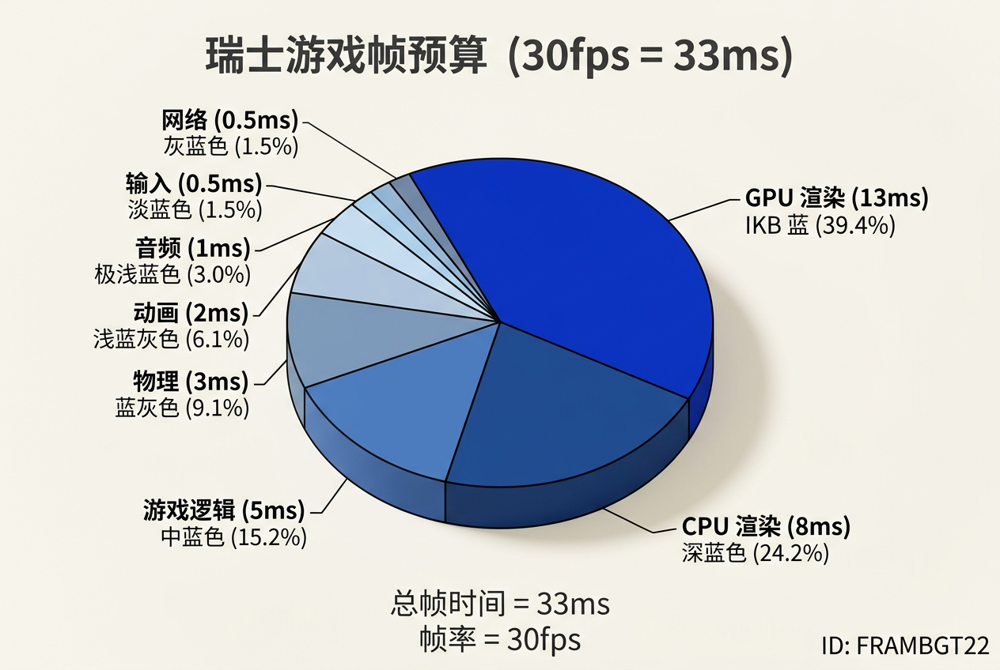
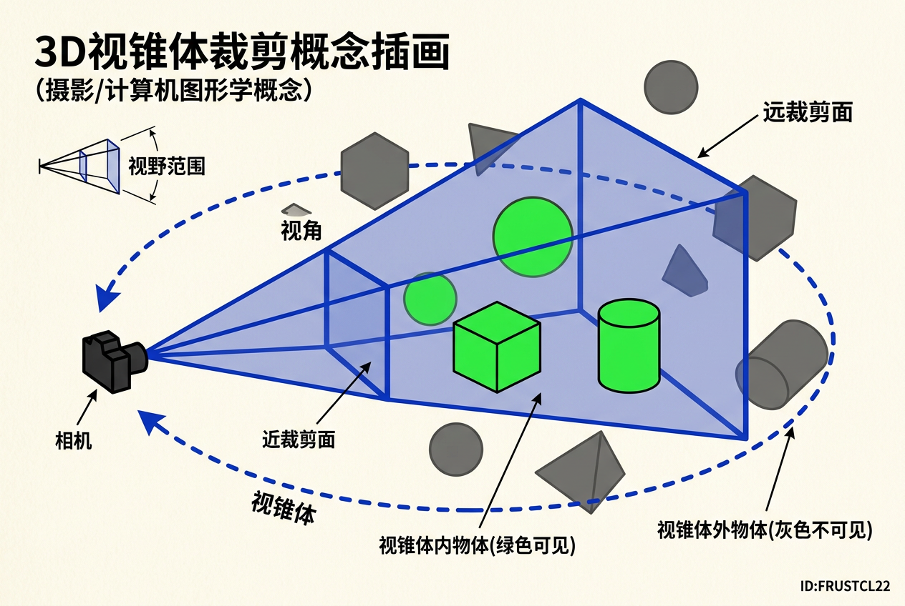
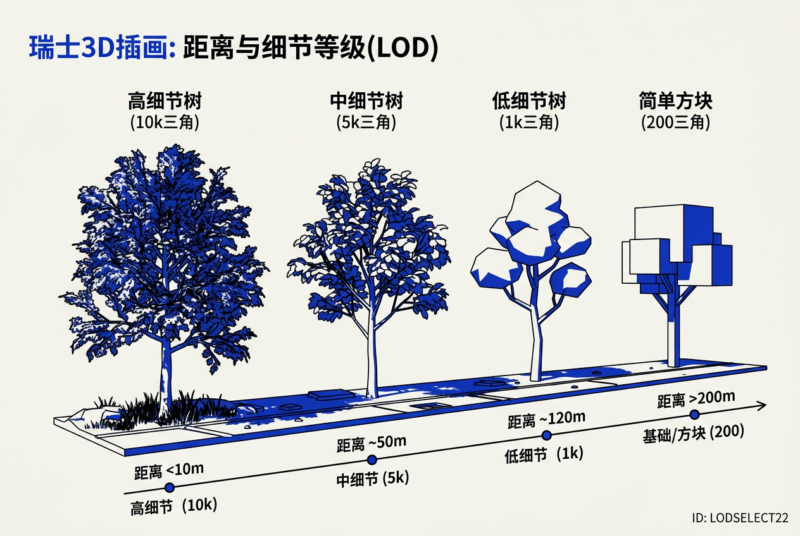
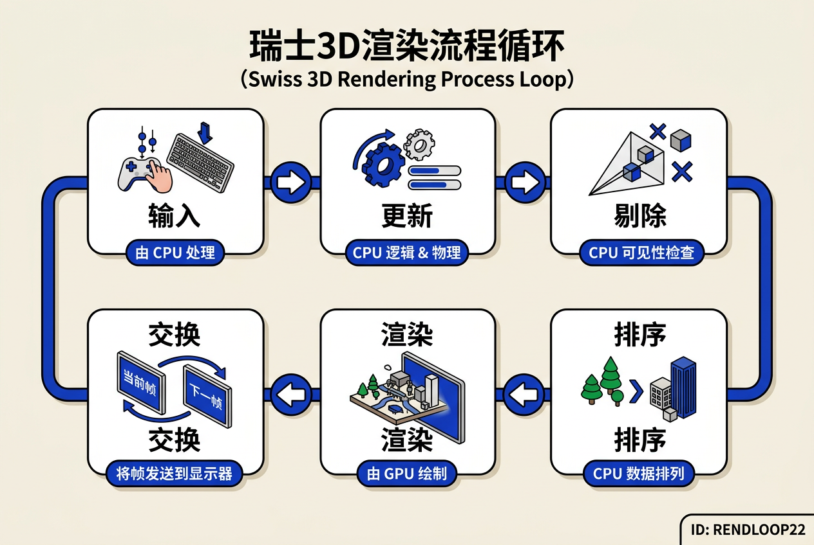

第22章：游戏中的计算机图形学 — 零基础极详细讲义
讲义说明
本讲义基于 Steve Marschner & Peter Shirley 所著《虎书5》第5版第22章（p.623-644），由10年经验游戏引擎/渲染工程师执笔。
本章是"游戏图形学"——所有前21章的集大成者。这一章不谈新算法，而是把之前所有内容（光栅化、纹理、光照、动画、加速结构）放到 "30帧/秒、100W三角形" 的真实约束下重新审视。
本版插画采用 Guizang 材质插画风格重新绘制。
学习目标
- 理解游戏平台的硬件差异与选型策略
- 掌握有限资源下的预算分配思维（CPU/GPU/Memory/团队时间）
- 理解优化技术矩阵：Culling、LOD、Batching、Prepass
- 掌握场景管理的数据结构（BVH/Octree/BSP/ECS）
- 理解碰撞检测的Broad/Narrow两阶段架构
- 掌握游戏渲染循环的完整生命周期
- 理解游戏类型对图形技术选型的根本影响
- 掌握美术资产生产管线（高模→低模→法线→纹理→Shader→动画）
22.1 游戏平台（Platforms）
22.1.1 为什么需要关注"平台"？
核心矛盾：游戏不像离线渲染电影——它必须在某个具体硬件上以确定的帧率运行。离线渲染可以花10小时渲染一帧，游戏每帧必须小于33ms（30fps）甚至小于16ms（60fps）。
离线渲染就像"请搬家公司搬一整个房子"——你可以花一整天精雕细琢每件家具怎么摆。游戏渲染就像"在高速公路上边开车边组装宜家家具"——你必须在车子开到下一个出口之前把椅子组装好，否则就"撞车"（掉帧）。
22.1.2 五大平台的差异
| 平台 | 硬件 | OS | API | 特点 | 对渲染的影响 |
|---|---|---|---|---|---|
| PC | 任意（千差万别） | Windows/Linux/Mac | DirectX/Vulkan/OpenGL | 配置差异巨大，必须可配置 | 需要动态分辨率、多档画质设置 |
| 主机（PS5/Xbox） | 固定（完全确定） | 定制OS | 厂商SDK | 硬件确定，可极致优化 | 可以写死参数，利用硬件特性 |
| 手机 | 弱（散热差） | iOS/Android | Metal/Vulkan/OpenGL | 续航敏感，发热严重 | 必须降分辨率、减少pass |
| Web | 任意（浏览器内） | 浏览器沙箱 | WebGL/WebGPU | 沙箱限制多，性能受限 | Draw Call上限低 |
| VR/AR | 头显（双目） | 定制 | OpenXR | 90/120fps强制要求 | 渲染分辨率要乘2（双眼） |
| 场景 | 推荐选 | 不推荐选 | 理由 |
|---|---|---|---|
| 移动端游戏 | Unity + Vulkan | Unreal + D3D12 | Unity移动生态成熟，Unreal移动端功耗大 |
| 主机AAA | Unreal Engine | 自研引擎 | UE5已针对PS5/Xbox优化，自研成本高 |
| Web小游戏 | WebGL + Three.js | 原生Vulkan | 浏览器不支持原生Vulkan，WebGL是唯一选择 |
因为主机硬件完全确定！开发者可以针对固定硬件做极致优化——比如PS5的定制SSD可以实现近乎即时的场景加载，这是PC无法比拟的。同样，因为没有"兼容千万种显卡"的负担，驱动程序的开销也小得多。
22.2 有限资源（Limited Resources）
22.2.1 核心矛盾：硬件永远不够用
游戏开发中需要管理 5 类有限资源，缺一不可：
想象你每个月有10000元收入（=一帧的33ms），需要分配在房租（GPU渲染）、食物（CPU渲染）、交通（物理模拟）、娱乐（动画）、储蓄（音频/网络）上。如果房租占太多，其他方面就得省。游戏引擎的"帧预算"完全一样——每个子系统只能分到固定的毫秒数。
| 资源 | 衡量 | 紧张程度 | 应对策略 |
|---|---|---|---|
| CPU时间 | ms/帧 | ⭐⭐⭐⭐ | 预算分配、Job System、多线程 |
| GPU时间 | ms/帧 | ⭐⭐⭐⭐⭐ | LOD、剔除、Shader优化 |
| 内存 | MB/GB | ⭐⭐⭐ | 流式加载、引用计数、压缩 |
| 带宽 | GB/s | ⭐⭐⭐ | 数据压缩、合并Draw Call |
| 开发时间 | 人月 | ⭐⭐⭐⭐⭐ | 工具链、复用、Asset Store |
22.2.2 帧率预算（Frame Budget）

30fps = 33.3ms/帧 = 一帧的"时间钱包"。每一项任务都在"抢钱"：
| 任务 | 预算（30fps） | 预算（60fps） | 占比 | 优化方向 |
|---|---|---|---|---|
| 输入处理 | 0.5ms | 0.25ms | 1.5% | 合并事件、批量处理 |
| 游戏逻辑 | 5ms | 2.5ms | 15% | Job System、ECS |
| 物理模拟 | 3ms | 1.5ms | 9% | LOD物理、简化碰撞体 |
| 动画更新 | 2ms | 1ms | 6% | LOD动画、GPU蒙皮 |
| CPU渲染 | 8ms | 4ms | 24% | 剔除、批处理、Job System |
| GPU渲染 | 13ms | 6.5ms | 39% | LOD、Shader优化、分辨率 |
| 音频 | 1ms | 0.5ms | 3% | 音频压缩、流式 |
| 网络 | 0.5ms | 0.25ms | 1.5% | 异步、预测 |
22.2.3 异构资源（Heterogeneous Resources）
GPU不是单一资源——它是多个并行单元的总和：
| 资源类型 | 任务 | 数量级 | 例子 |
|---|---|---|---|
| CPU核心 | 通用计算 | 4-16核 | 游戏逻辑、AI |
| Vertex Shader | 顶点变换 | 数千单元 | 蒙皮、顶点动画 |
| Pixel Shader | 像素计算 | 数千单元 | 光照、纹理采样 |
| 纹理单元 | 采样纹理 | 数十-百 | TexRead、过滤 |
| ROP | 写帧缓冲 | 数十 | 深度测试、混合 |
因为瓶颈可能在Vertex Shader而不是Pixel Shader！如果场景的瓶颈是"三角形太多"，你改材质（只影响Pixel Shader）完全没用。你要么减少三角形，要么优化Vertex Shader。这就是"一次只能优化一个瓶颈"原则——你必须先找到瓶颈在哪儿。
22.3 优化技术（Optimization Techniques）
22.3.1 核心理念："最便宜的渲染 = 不渲染"
你在一家大商场做推广活动。与其给每一个路人发传单（=渲染所有物体），不如：只给走进商场的人发（=视锥剔除）、不给背对你的人发（=背面剔除）、不给已经在其他柜台排队的人发（=遮挡剔除）。
| 技术 | 原理 | 节省量 | 实现难度 | 必备程度 |
|---|---|---|---|---|
| 视锥剔除 | 摄像机视野外的不画 | 50-90%三角形 | 低 | ⭐⭐⭐⭐⭐ 必备 |
| 遮挡剔除 | 被挡住的不画 | 50-95%像素 | 中 | ⭐⭐⭐⭐ 必备 |
| 背面剔除 | 看不到的背面不画 | 30-50%三角形 | 无（硬件自带） | ⭐⭐⭐⭐⭐ 自动 |
| LOD | 远距离用粗模 | 50-90%三角形 | 中 | ⭐⭐⭐⭐ 必备 |
| 小对象剔除 | 像素<1的不画 | 0-5% | 低 | ⭐⭐ 锦上添花 |
22.3.2 视锥剔除（Frustum Culling）

为什么需要视锥剔除？想象一个开放世界游戏，场景中有10万个物体。如果不做剔除，每帧都要遍历全部10万个物体，仅遍历开销就超过10ms。但实际只有几百个物体在视野内——剩下99.5%的工作都是浪费。
// 基本的视锥剔除——6个平面测试
function IsInFrustum(BoundingBox bbox, Frustum frustum):
// 对6个平面依次测试
// 左、右、上、下、近、远，共6个裁剪平面
for Plane p in frustum.planes:
// 如果包围盒完全在平面外侧 → 不可见
if bbox.IsOutside(p):
return false
return true为什么是6个平面？视锥体像一个平截头的金字塔——它有4个侧面（左/右/上/下）加上近裁剪面和远裁剪面。物体必须同时位于这6个平面内侧才可见。
| 结构 | 查询复杂度 | 适合场景 |
|---|---|---|
| 无结构（暴力） | O(n) — n=10万时不可接受 | 小场景 |
| BVH | O(log n) | 静态+动态混合 |
| 四叉树/八叉树 | O(log n) | 户外大场景 |
| 均匀网格 | O(1)~O(n) | 粒子系统 |
22.3.3 LOD（Level of Detail）

为什么需要LOD？一个角色模型有10万个三角形。当它在100米外时，在屏幕上只占50个像素。用10万三角形渲染50个像素的空间是巨大的浪费——每个像素平均处理2000个三角形。
| 距离 | LOD级别 | 三角形数 | 视觉差异 | 节省 |
|---|---|---|---|---|
| <10m | LOD 0 | 10,000 | 完整细节 | 0% |
| 10-50m | LOD 1 | 5,000 | 几乎看不出 | 50% |
| 50-200m | LOD 2 | 1,000 | 轻微差异 | 90% |
| 200-1000m | LOD 3 | 200 | 大致轮廓 | 98% |
| >1km | LOD 4 | 0 | 完全看不见 | 100% |
// LOD选择——基于距离的简化版
function SelectLOD(Object obj, Camera cam):
dist = distance(cam.position, obj.position)
if dist < 10: return 0 // 最近距离→最高细节
if dist < 50: return 1
if dist < 200: return 2
if dist < 1000:return 3
return -1 // 太远→不画22.3.4 遮挡剔除（Occlusion Culling）
| 方法 | 原理 | 适合 | 优点 | 缺点 |
|---|---|---|---|---|
| PVS | 预计算"每个格子能看到什么" | 室内（Doom/Quake） | 运行时零开销 | 只适合静态场景 |
| BSP | 预计算前后关系树 | 静态室内 | 确定性 | 构建复杂 |
| Hardware Occlusion Query | GPU实时查询"这个物体被挡了多少" | 户外 | 准确 | 有延迟（一帧延迟） |
| HiZ | 用上一帧深度做粗粒度遮挡测试 | 现代GPU通用 | 低开销 | 帧间依赖 |
22.3.5 Depth Prepass（深度预渲染）
为什么需要Depth Prepass？GPU的Early-Z只在你没有修改深度时生效。如果你的shader写了深度（比如用clip/discard），Early-Z就失效了。Depth Prepass先画一遍纯深度（不画颜色），让所有物体的深度都写入Z-buffer，第二遍画颜色时就可以用Early-Z拒绝被遮挡的像素。
// Depth Prepass 标准实现
// 第一遍：只写深度，不写颜色
for obj in opaque_objects:
draw(obj, depth_only=true, color_mask=false)
// 排序：不透明物体从前到后
sort(opaque_objects, front_to_back)
// 第二遍：画颜色，Early-Z会拒绝被遮挡的像素
for obj in opaque_objects:
draw(obj, color=true)22.3.6 Draw Call优化
为什么Draw Call是"天敌"？每次Draw Call，CPU需要准备顶点数据、设置渲染状态、提交命令——这些操作有0.1-1ms的固定开销。如果一帧有10000个Draw Call，仅开销就超过10ms。
| 技术 | 原理 | 效果 |
|---|---|---|
| Static Batching | 把多个静态网格合并成一个 | 1000个物体 → 1个Draw Call |
| GPU Instancing | 同mesh不同变换，一次提交 | 1000棵树 → 1个Draw Call |
| Dynamic Batching | 运行时合并材质相同的物体 | 节省30-50% Draw Call |
10000个Draw Call的CPU开销大约是10ms（假设每个1μs），加上GPU提交延迟，很容易超过16ms的60fps预算。而1000个只有1ms——这就是为什么优化目标通常是"每帧<3000 Draw Call"。在移动设备上，这个目标要更严格，通常希望 < 500。
22.4 游戏类型（Game Types）
22.4.1 为什么游戏类型决定技术选型？
核心原因：不同类型的游戏对渲染的约束完全不同。一个格斗游戏只有两个角色在屏幕上，可以给每个角色3万个三角形。一个RTS游戏有上千个单位，每个单位只能分到200个三角形。

22.4.2 按场景规模分类
| 类型 | 例子 | 场景规模 | 图形策略 | 核心挑战 |
|---|---|---|---|---|
| 室内封闭 | Devil May Cry, God of War | 1-2个房间 | 高细节、烘焙光照 | 有限空间内的极致画质 |
| 线性关卡 | Uncharted, Tomb Raider | 几十个关卡 | 中细节、混合光照 | 引导注意力 |
| 沙盒开放 | GTA, Skyrim | 几km² | 远粗近细、流式加载 | 大世界的性能一致性 |
| MMO大世界 | WoW, FF14 | 几十km² | 严格LOD、极致流式 | 多人同屏的性能保障 |
22.4.3 按美术风格分类
| 风格 | 例子 | 技术特点 | 图形投入 |
|---|---|---|---|
| 写实 | Crysis, COD | PBR、HDR、CSM、SSR | 极高 |
| 风格化写实 | 战神、神秘海域 | 风格化材质、强光影对比 | 高 |
| 卡通 | 喷射战士、原神 | 描边、平面色、Cel-shading | 中 |
| NPR | Okami, 茶杯头 | 水彩/油画滤镜、手绘风格 | 特殊 |
22.5 游戏生产流程（The Game Production Process）
22.5.1 标准开发流程
概念设计 (Concept Art)
↓
立项 (Greenlight) — 给发行商看Demo
↓
Pre-production (引擎选型、工具链搭建、技术验证)
↓
Full Production (主要内容制作——耗时最长)
↓
Alpha (内部测试、功能冻结)
↓
Beta (外部测试、修Bug)
↓
Gold / Release (送审、发布)
↓
补丁 / DLC (持续运营1-5年)22.5.2 资产创建流程
想象一个雕塑家的工作流程：先用粗泥塑一个大概的形状（=高模），然后用工具刻出细节（=ZBrush雕刻），最后翻模做出一个轻便的塑料复制品（=低模+法线贴图）。游戏资产创建完全一样——先做高模（细节丰富但太"重"），然后"烤"出法线贴图用在低模上。
高模 (Hi-poly, ZBrush, 数百万面)
↓ 烘焙 (Bake Normal Map)
法线贴图 (Normal Map, 编码细节到颜色)
↓
低模 (Low-poly, Maya/Blender, 几千面)
↓
UV展开 (UV Mapping, 连续无撕裂)
↓
纹理贴图 (Diffuse, Normal, Specular, Roughness, AO)
↓
Shader配置 (PBR参数调试)
↓
骨骼绑定 (Rigging) + 蒙皮 (Skinning)
↓
动画 (Animation)
↓
入库 (Import to Engine)22.5.3 法线贴图深度解析
为什么需要法线贴图？一个角色的皮肤上有毛孔、皱纹、伤疤——这些细节如果用三角形建模，需要几百万个三角形。法线贴图用一张图片"假装"有这些细节，让光照计算认为表面是凹凸不平的，但实际几何是平滑的。
// Shader中解码法线贴图
vec3 normal = texture(normalMap, uv).rgb * 2.0 - 1.0;
// 法线贴图的RGB编码了切线空间中的法线方向
// *2-1 把[0,1]映射回[-1,1]
normal = normalize(TBN * normal);
// 从切线空间变换到世界空间22.6 场景管理（Scene Management）
22.6.1 为什么需要场景管理？
核心问题：没有场景管理 = O(n)检查所有物体。10万个物体时，每帧要遍历10万次——仅这个操作就超过10ms。
无场景管理: for each obj in 100000: test(obj) → 100000次测试
有Octree: for each leaf in visible_set: test(obj) → 8-64次测试
加速比: 1000倍以上！22.6.2 空间数据结构对比
| 数据结构 | 原理 | 查询 | 构建 | 动态更新 | 适合场景 |
|---|---|---|---|---|---|
| BVH | 二叉树，任意轴划分 | O(log n) | O(n log n) | 中 | 光线追踪、静态几何 |
| Octree | 8等分立方体 | O(log n) | O(n log n) | 中 | 户外、Voxel |
| K-d Tree | 二叉树，坐标轴交替 | O(log n) | O(n log n) | 差 | 光线追踪（最佳） |
| BSP | 二叉平面分割 | O(log n) | O(n²) | 不可变 | 静态室内（Quake） |
| Uniform Grid | 规则网格 | O(1)~O(n) | O(n) | 好 | 粒子、规则场景 |
| 场景 | 推荐 | 不推荐 | 理由 |
|---|---|---|---|
| 光线追踪加速 | BVH + SAH | 均匀网格 | BVH自适应空间分布，比网格更紧凑 |
| 室内静态场景 | BSP | Octree | BSP的PVS预计算对室内最有效 |
| 动态大世界 | Octree/Dynamic BVH | K-d Tree | K-d Tree重构代价太高 |
22.7 碰撞检测（Collision Detection）
22.7.1 包围体（Bounding Volumes）
| 类型 | 表示 | 紧密性 | 测试速度 | 适合 |
|---|---|---|---|---|
| AABB | 6个轴对齐面 | 差 | 最快 | 静态物体粗筛 |
| OBB | 任意方向盒 | 中 | 中 | 旋转物体 |
| Sphere | 球体 | 差 | 快 | 球类、快速测试 |
| Capsule | 圆柱+半球 | 中 | 快 | 角色碰撞（腿+身） |
| Convex Hull | 凸包 | 好 | 中 | 任意凸形 |
| Mesh | 三角形精确 | 完美 | 慢 | 精确需求 |
22.8 渲染循环（Render Loop）

22.8.1 标准游戏循环
While (game is running):
ProcessInput() // 处理键盘、鼠标、手柄输入
Update() // 游戏逻辑 + 物理 + 动画 + AI
Render() // 裁剪→排序→渲染→后处理
WaitForFrameEnd() // 限流到30/60fps22.8.2 一帧的完整渲染管线
Frame N
├─ CPU阶段
│ ├─ 输入处理: 读取鼠标/键盘/手柄
│ ├─ 游戏逻辑: 玩家状态、AI决策、事件处理
│ ├─ 物理模拟: 碰撞检测、刚体/软体
│ ├─ 动画更新: 骨骼动画、变形目标、IK
│ └─ 相机更新: 设置视锥体参数
│
├─ 场景更新 (CPU)
│ ├─ 视锥剔除 → 生成可见列表
│ ├─ 遮挡剔除 → 精炼可见列表
│ ├─ 排序: 不透明前到后、半透明后到前
│ └─ 构建Command Buffer
│
├─ GPU渲染
│ ├─ Shadow Pass: 所有阴影投射体
│ ├─ Depth Prepass: 深度预渲染(可选)
│ ├─ Opaque Pass: 不透明物体(Early-Z)
│ ├─ Sky: 天空盒/天空球
│ ├─ Transparent Pass: 半透明(无Early-Z)
│ ├─ Post-Process: Bloom、Tonemap、AA
│ └─ UI: 界面层
│
└─ Present: 交换前后缓冲22.9 调试与性能分析（Debug & Profiling）
22.9.1 常见瓶颈速查
| 症状 | 原因 | 排查工具 | 解决方案 |
|---|---|---|---|
| GPU利用率100% | GPU满载 | RenderDoc, PIX | 降低分辨率、简化Shader |
| CPU利用率100% | 渲染线程忙 | Unreal Insights | Job System、减少Draw Call |
| Draw Call太高 | 物体太碎 | stat unit (UE) | 合批、Instancing |
| SetPass太多 | 材质切换频繁 | stat shader | 材质合并、排序 |
| 三角形太多 | 几何没LOD | stat rhi | 加LOD、HLOD |
因为人的直觉对于"多线程并行环境下的瓶颈定位"完全不可靠。可能你觉得"场景物体太多"所以去优化剔除，但实际瓶颈是"阴影贴图分辨率太高"。必须用Profiler（如RenderDoc、Unreal Insights）先测量，再优化。这就是游戏引擎的黄金法则：Measure first, optimize second。
全章总结
| 主题 | 一句话 |
|---|---|
| 平台 | 没有"通用游戏"——选型看平台，平台决定约束 |
| 资源 | CPU/GPU/Memory/团队时间，全是瓶颈，一个都不能忽视 |
| 预算 | 30fps=33ms，每毫秒都要精打细算 |
| 优化 | 不画 > 画简单 > 画复杂，从易到难 |
| 场景管理 | 没有空间分割 = O(n) = 卡死 |
| 碰撞 | 包围体粗筛（Broad Phase）+ 精确细检（Narrow Phase） |
| LOD | 远粗近细，HLOD是大世界终极武器 |
| 生产流程 | 美术是团队的70%，程序员为美术服务 |
| 渲染循环 | CPU/GPU完全并行，流水线深度2-3 |
| Profile | Measure first, optimize second |
游戏图形学就像米其林大厨做菜——不是"能做出什么"的问题，而是"在30分钟内给100人做出可口的菜"。你需要知道每种食材的准备时间（=渲染开销），合理安排工序（=管线），在时间压力下做出最好的味道（=画面）。真正的厨师（=游戏工程师）不是只懂做菜（=图形学理论），更要懂厨房管理（=资源预算、团队协作）。
给读者的最后一句：
"游戏图形学不是科学，是工程。"
你不需要发明新算法——你需要把已知算法用对地方。99%的性能问题都来自"在错的地方用了对的算法"。
Measure. Profile. Optimize. Repeat.
讲义完成。第22章覆盖了从平台到优化的全部"工程"视角——这是你从"学生"到"工程师"的分水岭。